|
|
| hard corals text index | photo index |
| Phylum Cnidaria > Class Anthozoa > Subclass Zoantharia/Hexacorallia > Order Scleractinia > Family Fungiidae |
| Feather
mushroom coral Ctenactis sp.* Family Fungiidae updated Nov 2019 Where seen? This oval mushroom coral with a feather-like texture is sometimes seen on some of our undisturbed Southern shores. The coral is free-living (it is not attached to the surface) and large ones may be seen on sandy shallow areas near living reefs. Features: Oval or elongated convex disks with rounded ends, to about 20-30cm long. A prominent central furrow. Ctenactis echinata has one mouth, while the other species may have several. In all of them, the mouths are found only in the central furrow. Upper surface with thin lines radiating from the central furrow, so the entire animal resembles a feather. Lines are parallel, continuous with relatively large triangular, evenly spaced 'teeth' that are obvious even when covered with living tissue. The tentacles are tiny and very sparse. The underside usually concave, some with radiating lines of short bumps. Colours seen include yellow, brown, green and blue. Sometimes confused with other long mushroom corals. Here's more on how to tell apart elongated mushroom hard corals. Status and threats: Ctenactis albitentaculata is listed as globally Near Threatened by the IUCN. |
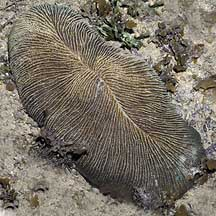 Raffles Lighthouse, Jul 06 |
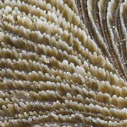 Large, triangular, evenly spaced 'teeth'. |
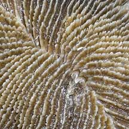 Prominent central furrow. |
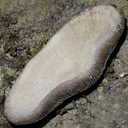 Underside concave. |
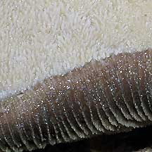 Underside and sides. |
*Species are difficult to positively identify without close examination.
On this website, they are grouped by external features for convenience of display.
| Feather mushroom corals on Singapore shores |
On wildsingapore
flickr
|
| Other sightings on Singapore shores |
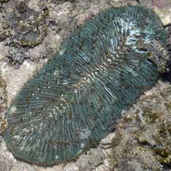 Raffles Lighthouse, Aug 06 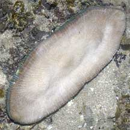 Underside. |
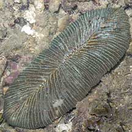 Raffles Lighthouse, Jul 06 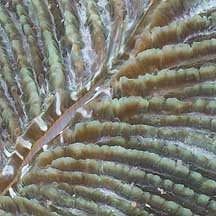 Mouth in the central furrow. |
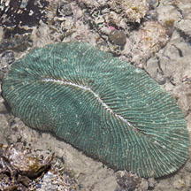 Terumbu Bemban, Jul 11 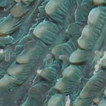 Tiny tentacles, very sparse. |
| Ctenactis
species recorded for Singapore from Danwei Huang, Karenne P. P. Tun, L. M Chou and Peter A. Todd. 30 Dec 2009. An inventory of zooxanthellate sclerectinian corals in Singapore including 33 new records. **the species found on many shores in Danwei's paper. in red are those listed as threatened on the IUCN global list.
|
|
Links
References
|